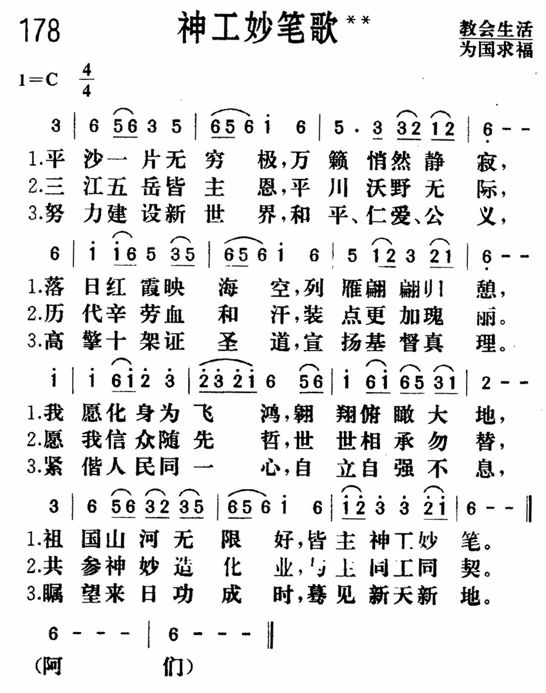

1664 神工妙笔 CREATOR’S ARTISTIC BRUSH
平沙一片无穷极 万籁消然静寂
|
|
|

http://www.xueshengshi.com/?p=9697
|
|

-
https://youtu.be/dGgJ8RWEogE 新編讚美詩178神工妙筆歌
-
https://youtu.be/udGjaWWZ37g 178神工妙笔歌新编赞美诗442首
http://www.xueshengshi.com/?p=9697
简介（一） （来源：《赞美诗新编史话》）
神工妙笔歌
经文：“用绳量给我的地界，坐落在佳美之处；我的产业实在美好” (诗 16：6)。
《神工妙笔歌》的歌词是金陵协和神学院副院长陈泽民牧师所作，
曲调由他根据《平沙落雁》改编。
陈泽民是神学教授，也是我国教会难得的音乐家、作曲家。他生于l917年，l941年毕业于上海沪江大学，1944年获南京金陵神学士学位，曾任浙江绍兴福康医院宗教服务部主任。他在该时期写下的灵修书籍《云柱与火柱》已于1991年重版。195O年起，他从事神学教育迄今，真可谓是四十年如一日，桃李遍全国。他对于推进教会圣乐工作一向不遗余力，是《新编》编辑委员会委员，也是金陵协和神学院出版的《圣歌选集》编辑组主要负责人。

陈泽民年轻时学过古琴，当时觉得有几首琴曲很适合改编为赞美诗。l956年他作了这方面的尝试，将《平沙落雁》古琴曲配上自编的赞美诗歌词《欢迎复活晨》，发表在《天风》上。1981年，中国基督教圣诗委员会组成后，他将《天风》1956年曾登出过的两首由他根据古琴调改编的赞美诗寄来。除了这一首外，另一首是《普安调
(诗篇 1O3篇l至l3节)》，见《新编》第381首。
《平沙落雁》本是古琴独奏曲，相传为l5世纪明朝朱权所作，是古琴曲中最被人喜爱的一首，几乎每一位古琴家都爱演奏。它有许多不同传谱，但基本曲调相似，本来是描写平沙无际，落雁低回的情景，曲调优美，是我国民族音乐的珍贵遗产。原曲较长，改编的是其中的主题和发展的乐句
。陈泽民重读了《欢迎复活晨》的歌词，感到配在此曲上不够满意。在同工们的鼓励下。他重写了歌词，即现在的《神工妙笔歌》。
新的歌词以“平沙一片无穷极，万籁悄然静寂，落日红霞映海空，列雁翩翩归憩”起始，完全重现了《平沙落雁》曲的意境。它也是对祖国山河美丽的描写，富于爱国感情。
作为赞美诗，作者把大好河山归结于神的奇妙创造，这就是“神工妙笔”的主题思想。但他并没有停留于感谢神的创造之恩，而是指出，世界需要历代的人付出血汗代价去辛劳工作，才能“装点更加瑰丽”。为此，他鼓励信徒“共参神妙造化业”，为建设一个美好的世界而作努力，这也是“与主同工”。
第三节更进一层，说明信徒不光建设这个有形的世界，还有对新天新地的盼望。它表现在信徒在世既要高擎十架，传扬基督的真道，还要与人民同心实现和平、仁爱、公义，才能使神的国降临，神的旨意行在地上，如同行在天上。这首诗从写景开始，落实于信徒的责任与更美好的盼望，诚为抒发爱国爱教感情的不可多得的佳作。
在改编曲调方面，陈泽民不仅照顾到赞美诗的格律需要，在四声部合唱的写作中，还考虑使用中国民族风格的和声，构成了一幅色彩斑斓的风景画。
全曲最后一个主音上的小和弦，高音 1升高半音，转成大和弦，即所谓“辟卡迪三度”①，是巴赫常用的结尾和弦，给人一种充满希望和光明的感觉。
①辟卡迪三度 (1ierce de Picardie)：用在小调式乐曲结束和弦中的大三度 ，代替应该出现的小三度。
------------------------------------------------------------------------------------
https://gospeltimes.cn/article/index/id/53681
《平沙落雁》本是古琴独奏曲，相传为15世纪明朝朱权（1378-1448）所作，是古琴曲中最被人喜爱的一首，几乎每一位古琴家都爱演奏。它有许多传谱，但基本曲调相似，本来是描写平沙无际，落雁低回的情景，曲调优美，是我国民族音乐珍贵的遗产。原曲较长，改编的是其中的主题和发展的乐句。陈泽民重读了《欢迎复活晨》的歌词，感到配在此曲上不够满意。在同工们的鼓励下，他决心在原来的创作的基础上重写歌词，即现在的《神工妙笔》。新的歌词以——
“平沙一片无穷极，万籁悄然静寂，
落日红霞映海空，列雁翩翩归憩……”
为始，完全重现了《平沙落雁》曲的意境。通过对祖国山河美丽的描写，流露出陈牧师深沉的爱国情怀。作为赞美诗，作者把大好河山归结于神的奇妙创造，这就是“神工妙笔”的主题思想。但他并没有停留于感谢神的创造之恩，而是指出，世界需要历代人的付出血汗代价去辛劳工作，才能“装点更加瑰丽”。为此，他鼓励信徒“共参神妙造化业”，为建设一个美好的世界而作努力，这也是“与主同工”的表现。第三节更进一层，说明信徒不光建设这个有形的世界，还有对“新天新地”的盼望。它表现在信徒在世既要“高擎十架”，“宣扬基督真理”，还要与人民同心实现“和平、仁爱、公义”，才能使神的国降临，神的旨意行在地上，如同行在天上。这首诗从写景开始，落实于信徒的责任与更美好的盼望，成为抒发爱国感情的不可多得的佳作。
这首诗所用的是古汉语长短句诗体，不仅有宋词之丝竹，更有元曲之吟唱。在陈牧师的大量著述中，留下了许多首赞美诗作，但只此一首已足见他在基督教音乐方面的功底了。陈泽民牧师以神学家、神学教育家和宗教学者的身份闻名于世，每每遮盖了他的圣乐才华，其实他还是一位优秀的基督教音乐家。
在曲调改编方面，陈牧师不仅照顾到赞美诗的格律需要，在四声部的写作中，还考虑使用中国民族风格的和声，构成了一副色彩绮丽的风景画。全曲最后一个主音上的小和弦，高音1升高半音，转成大和弦，即所谓“辟卡迪三度”（辟卡迪三度<Lierce de Picardie>:用在小调式乐曲结束和弦中的大三度，代替应该出现的小三度），是巴赫（John Sebastian Bach,1685-1751)常用的结尾和弦，给人一种充满希望和光明的感觉。
在《赞美诗歌.修订本》中，作词（配词）作曲（改编）的是：第272、622、623等3首；作曲的是：第572首。
这首圣诗非常优美，速度不宜快。
https://baike.baidu.com/item/%E9%99%88%E6%B3%BD%E6%B0%91/23741014
陈泽民教授于1917年出生于广东省汕头市，1941年毕业于基督教高等学府沪江大学，获文学学士学位；1944年毕业于金陵神学院研究科，获神学学士学位；1995年菲律宾大学授予神学博士学位。1950年8月起陈教授便任教于金陵神学院及1952年以后的金陵协和神学院，直至2002年退休。期间教授系统神学、历史神学、教会音乐等。曾任金陵神学院教务长、副院长以及南京圣保罗教堂主任牧师。 [1]
陈泽民教授不仅是教会内的神学家，同时也是深受我国学界尊重的宗教学者。1979年开始他便在南京大学宗教研究所担任研究生指导工作，参加《中国大百科全书宗教卷》的编辑，担任基督教部分的主编，1991年与罗竹风共同主编《宗教学概论》，被许多宗教学系选为教材。
[1]
陈泽民教授等人的译著《基督教思想史》荣获“艾香德奖”。 [2]
2018年6月4日，中国基督教知名神学家、神学教育家、基督教音乐家、金陵协和神学院原副院长陈泽民教授离世归主，享年101岁。 [1]
https://zh.wikipedia.org/wiki/%E9%99%B3%E6%BE%A4%E6%B0%91_(%E7%A5%9E%E5%AD%B8%E5%AE%B6)
陳澤民 (神學家)[編輯]

| 陳澤民 | |
|---|---|
| 出生 | 1917年10月15日 |
| 逝世 | 2018年6月4日（100歲） |
| 國籍 |
|
| 教育程度 | 滬江大學文學學士 |
| 職業 | 神學家 |
陳澤民（1917年10月15日－2018年10月15日），男，廣東汕頭人，中國基督教新教現代派神學家、神學教育家，原中國基督教協會副會長、南京金陵協和神學院副院長。[1]
生平[編輯]
1917年10月15日生於廣東省汕頭礐石。1936年畢業於礐光中學。翌年進入滬江大學深造，獲文學學士學位。1941年到金陵神學院學習,1944年獲神學學士學位。後在浙江紹興福康醫院任院牧、宗教社會服務部主任。1950年到金陵協和神學院任教,歷任代教務長、副教務長、副院長等職,同時兼任浙滬浸禮會按立牧師。
1979年被聘為南京大學宗教研究所研究生導師、教授。為江蘇省第五、六、七屆政協委員、中國宗教學會副會長、中國基督教協會副會長、江蘇省基督教協會副會長。
著作[編輯]
- 《雲柱與火柱》
- 《信心引導我們前進》
主編[編輯]
- 《金陵神學志》
- 《金陵神學文選》（1992）
- 《基督教常識答問》
- 《華夏聖詩》
- 《中國大百科全書·宗教卷》基督教分支學科
參考文獻[編輯]
- ^ 福音时报专访中国基督教著名神学家、神学教育家陈泽民教授(1). 福音時報. [2020-12-06].